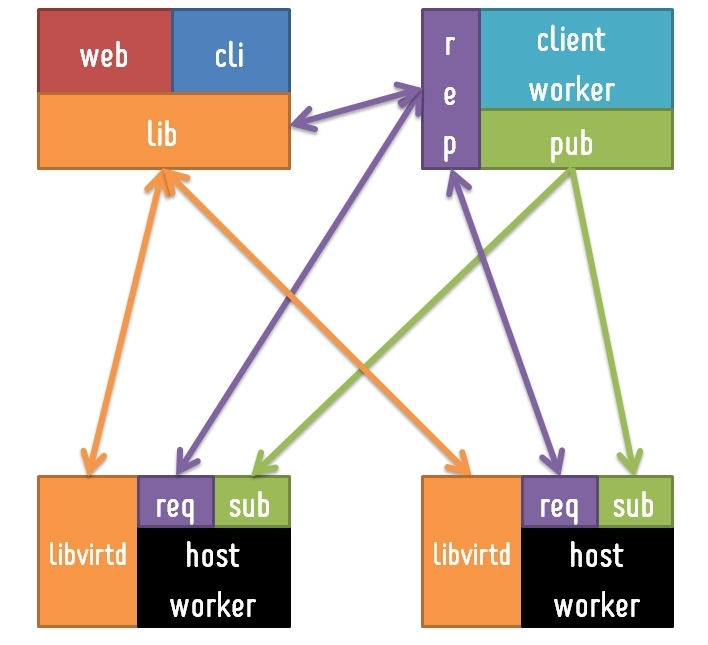

Maglica
A Simple Internal Cloud Tool
A Simple VM Operation Tool
Easy VM Cloning and Network Setting
Easy Increasing and Decreasing CPUs, Memories and Disks
Seamless Handling Multiple Hosts
Easy VM cloning and network configuration
Each Services Have Their Own Hosts For Development
Unbalanced Hardware Resources
We Need Hosts Pool For Every Services
Ease VM Creation, Setting And Deletion
Exsisting Tools Are So Complicated
(Eucalyptus, OpenStack, CloudStack, Nimbula And So On)
Architecture of Maglica
